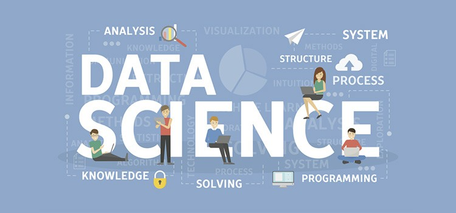
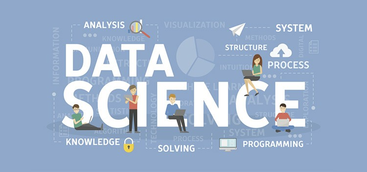

Course ID: BSC009
Course Name: B.Sc in Data Science
Course Code: DS101
🎯 Scope of B.Sc Data Science
- Statistical Analysis & Machine Learning
- Big Data Technologies (Hadoop, Spark)
- Data Visualization and Storytelling
- Artificial Intelligence & Deep Learning
- Cloud Computing & Data Engineering
- Real-world Applications: Finance, Healthcare, Marketing
✅ Benefits of Studying Data Science
- 📊 High Demand: Growing need for skilled data professionals
- 🧠 Analytical Thinking: Develop strong logical and statistical skills
- 💼 Versatile Career Paths across industries
- 🧮 Hands-on with real datasets, projects & AI tools
- 💻 Learn modern tech stacks (Python, R, SQL, Tableau)
⭐ Advantages of B.Sc Data Science
- 🚀 Fast-growing career field with high salaries
- 🎓 Foundation for M.Sc in Data Science, AI, Business Analytics
- 🤖 Contribution to cutting-edge research and innovation
- 🌍 Opportunities in global tech firms and startups
- 🔍 Problem-solving in diverse real-world domains
📘 Higher Study Options After B.Sc Data Science
- M.Sc in Data Science / Artificial Intelligence / Machine Learning
- M.Tech in Data Analytics / Computational Science
- MBA in Business Analytics / Information Systems
- Post Graduate Diploma in Data Science / Big Data
- Professional certifications: Google, AWS, Microsoft AI, IBM
- Ph.D. in Data Science / AI / Decision Sciences
💼 Job Opportunities After B.Sc Data Science
- 📈 Data Analyst / Business Analyst
- 🤖 Machine Learning Engineer
- 🧠 AI Research Assistant / NLP Engineer
- 💻 Data Scientist / Statistician
- 🗃️ Database Administrator / Data Engineer
- 📊 BI Developer / Data Visualization Expert
- 🔍 Market Research Analyst / Risk Analyst
- 🌐 Cloud Data Engineer (AWS, Azure)
- 🧪 Research and Development Roles in Data Labs
 
